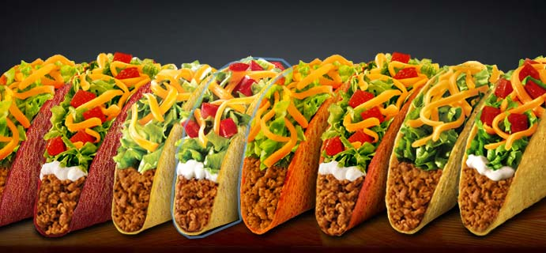
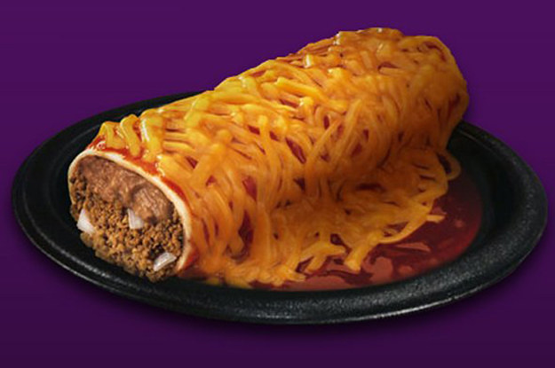
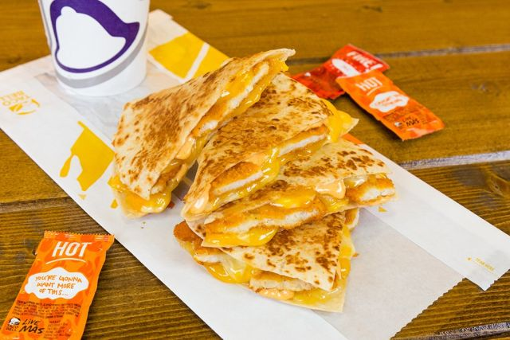

TacoBell

Taco Bell es una franquicia de restaurantes de comida rápida, especializada en cocina Tex-Mex. La cadena fue fundada en 1962 por Glen Bell y actualmente pertenece a la multinacional Yum! Brands.



